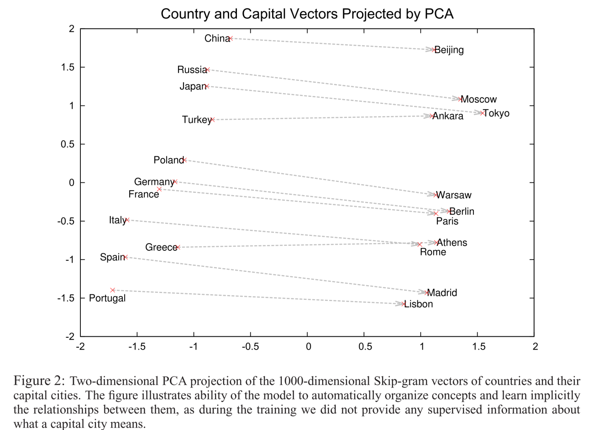
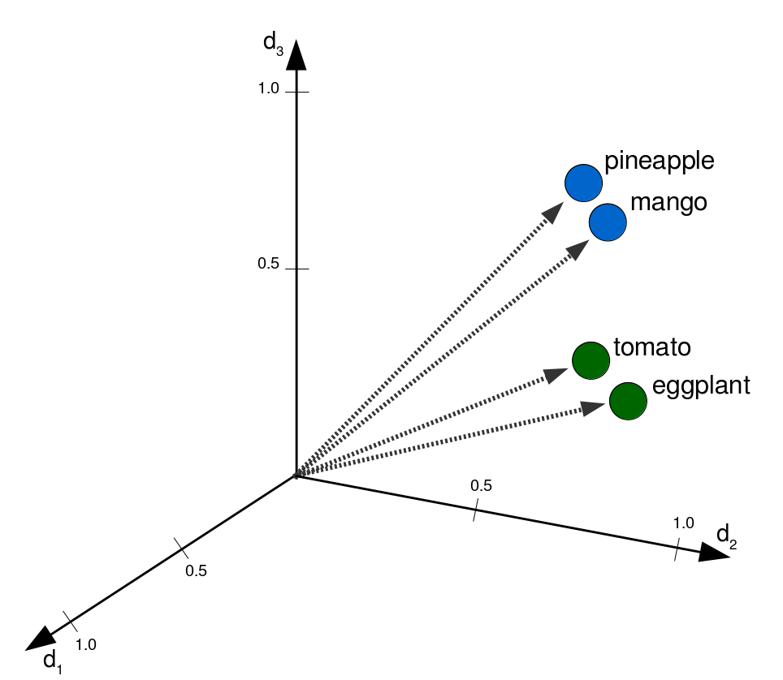
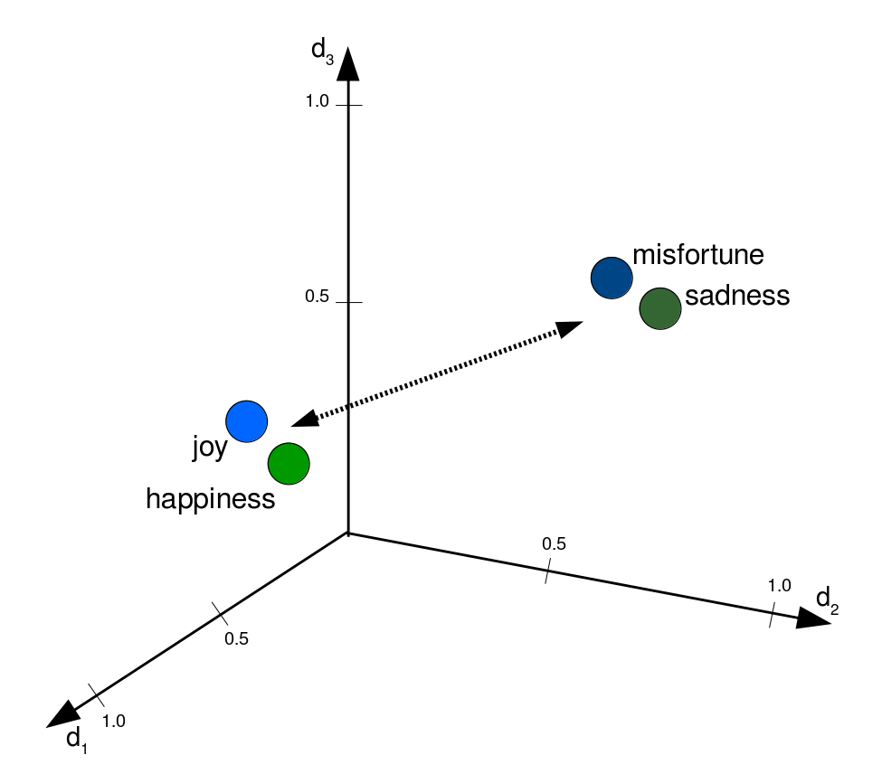

<!doctype html>
<html lang="en">
<head>
<meta charset="utf-8">
<!-- CUSTOMIZE THIS! -->
<title>Word Embeddings in DH</title>
<meta name="author" content="Christof Schöch">
<!-- END -->
<meta name="description" content="Slides">
<meta name="apple-mobile-web-app-capable" content="yes">
<meta name="apple-mobile-web-app-status-bar-style" content="black-translucent">
<meta name="viewport" content="width=device-width, initial-scale=1.0, maximum-scale=1.0, user-scalable=no, minimal-ui">
<link rel="stylesheet" href="css/reveal.css">
<link rel="stylesheet" href="css/theme/simple.css" id="theme">
<!-- Code syntax highlighting -->
<link rel="stylesheet" href="lib/css/zenburn.css">
<!-- Printing and PDF exports -->
<script>
var link = document.createElement( 'link' );
link.rel = 'stylesheet';
link.type = 'text/css';
link.href = window.location.search.match( /print-pdf/gi ) ? 'css/print/pdf.css' : 'css/print/paper.css';
document.getElementsByTagName( 'head' )[0].appendChild( link );
</script>
<!--[if lt IE 9]>
<script src="lib/js/html5shiv.js"></script>
<![endif]-->
</head>

<body>
<div class="reveal">
<div class="slides">
<section data-markdown="" data-separator="^\n--\n" data-separator-vertical="^\n---\n" data-charset="utf-8" data-background-image="img/basics/uni-trier-mini.jpg" data-background-size="50px" data-background-position="top right">
<script type="text/template">

<!-- THIS IS WHERE THE CONTENT GOES! -->
<!-- Any section element inside of this container is displayed as a slide -->

## Word Embeddings in Digital Humanities
<hr/>
<br/>
Christof Schöch<br/>(Trier, Germany)
<br/>
<hr/>
<br/>
International Study Week | Zürich University | June 11, 2020
<br/>
<br/>
slides: https://christofs.github.io/wem/
<br/>pad: https://quotidien.framapad.org/p/zurich
<br/>
<hr/>
&nbsp;&nbsp;&nbsp;


--
# Overview
<br/>
1. [Introduction](#/2)
1. [What are Word Embedding Models?](#/3)
1. [How do you create a Word Embedding Model?](#/4)
2. [Word Embeddings and Topic Coherence](#/5)
3. [Word Embeddings for Sentiment Analysis](#/6)
4. [Conclusion](#/7)


--
<br/>
# Introduction

---
## You may have seen this

<br/><small>
(Mikolov et al. 2013)
</small>

---
## Or this

<br/><small>
(Mikolov et al. 2013)
</small>

---
## Or maybe this

<br/><small>
(Hamilton, Leskovec, Jurafsky 2015)
</small>


---
## Basic idea today
<br/>
* Word Embedding Models are cool, but... <br/><br/> <!-- .element: class="fragment" data-fragment-index="1" -->
* How do they actually work? <!-- .element: class="fragment" data-fragment-index="2" -->
* How can they be useful in Digital Humanities? <!-- .element: class="fragment" data-fragment-index="3" -->
    * Integrated with other digital methods <!-- .element: class="fragment" data-fragment-index="4" -->
    * And in their own right <!-- .element: class="fragment" data-fragment-index="5" -->
* And how far are they taking us to understanding text? <!-- .element: class="fragment" data-fragment-index="6" -->


--
<br/>
# What are Word Embedding Models?

---
## Intuition about distributional semantics
<br/>
* "Her friend's ...... was located on the second floor of the house." 
<br/><br/>
* "apartment" ! <!-- .element: class="fragment" data-fragment-index="1" -->
* "room" ! <!-- .element: class="fragment" data-fragment-index="2" -->
* "balcony" ? <!-- .element: class="fragment" data-fragment-index="3" -->
* "cat" ?? <!-- .element: class="fragment" data-fragment-index="4" -->
* "shark" ??? <!-- .element: class="fragment" data-fragment-index="5" -->
* "comfortable" ???? <!-- .element: class="fragment" data-fragment-index="6" -->


---
## What does this example tell us?
<br/>
* The words fit more or less, syntactically and semantically <!-- .element: class="fragment" data-fragment-index="1" -->
* We are able to rank the likelihood of these words in the given context <!-- .element: class="fragment" data-fragment-index="2" -->
* We use world knowledge, but also linguistic competency, for this <!-- .element: class="fragment" data-fragment-index="3" -->
* Computers can learn this too, based on cooccurrence patterns <!-- .element: class="fragment" data-fragment-index="4" -->
* That's how distributional semantics works! <!-- .element: class="fragment" data-fragment-index="5" -->


---
## Distributional Semantics
<br/>
>"You shall know a word by the company it keeps" (Firth)

* Words that occur in similar contexts have similar meaning <!-- .element: class="fragment" data-fragment-index="1" -->
* Words that frequently co-occur are semantically related <!-- .element: class="fragment" data-fragment-index="2" -->
* Words that appear in very similar, specific contexts have similar grammatical functions <!-- .element: class="fragment" data-fragment-index="3" -->


---
## Information Retrieval: Vector Space Model
<br/>
* Each document has a certain place in a vector space <!-- .element: class="fragment" data-fragment-index="1" -->
* That place is determined by the keywords that appear in the document <!-- .element: class="fragment" data-fragment-index="2" -->
* Each word is a dimension in the vector space <!-- .element: class="fragment" data-fragment-index="3" -->
* Documents with shared vocabulary end up in the same area of the vector space <!-- .element: class="fragment" data-fragment-index="4" -->

---
## Information Retrieval: Vector Space Model

<br/>
<small>d1, d2: two documents; q = query. <br/><br/>(Originally: Gerald Salton et al. (1975). Image Credit: Riclas, Wikipedia, [Creative Commons Atttribution 3.0](https://commons.wikimedia.org/w/index.php?curid=9076846))</small>


---
## "Geometry and Meaning"
<br/>
* or: Word semantics in vector space
* Each word is assigned a vector
* Closeness denotes semantic similarity
* Relations are expressed by directionality
<p style="text-align:center"></p>


---
## Closeness ≈ similarity

<small>
(Artificial data. Image: Christof Schöch, 2019, [CC BY 4.0 Int'l](https://creativecommons.org/licenses/by/4.0/))
</small>

---
## Distance ≈ dissimilarity

<small>
(Artificial data. Image: Christof Schöch, 2019, [CC BY 4.0 Int'l](https://creativecommons.org/licenses/by/4.0/))
</small>

---
## Directionality ≈ relations

<small>
(Artificial data. Image: Christof Schöch, 2019, [CC BY 4.0 Int'l](https://creativecommons.org/licenses/by/4.0/))
</small>


--
<br/>
# How do you create a Word Embedding Model?

---
## Large amounts of text
<br/>
* A very large newstext archive 
* All of Wikipedia 
* All of reddit
* All of ECCO/EBBO
* 1000 novels


---
## Model Training Architecture
<a href="img/cbow.png"></a>
<small>
Example for the input "lazy panda bear"<br/>
(CBOW architecture. Image: Christof Schöch, 2019, [CC BY 4.0 Int'l](https://creativecommons.org/licenses/by/4.0/))
</small>


---
## Two Models
<br/>
* French Wikipedia <!-- .element: class="fragment" data-fragment-index="1" -->
    * 1.8 million articles, 750 million words
    * skip-gram model, 300 dimensions
    * tokens: "lemma_pos"<br/><br/> 
* French 20th-century novels <!-- .element: class="fragment" data-fragment-index="2" -->
    * 1200 novels, 75 million words
    * skip-gram model, 300 dimensions
    * tokens: "lemma_pos"


---
## Wikipedia Model, visualized
<a href="img/tsne-plot_topn-nom-5800_some-labels.svg"></a>
<br/><small>(tSNE-projection to two dimensions)</small>


---
## Similar Words Query
<br/>
```
Query: ['rouge_adj', ['_adj'], 20]
------------  --------
bleu_adj      0.716535
jaune_adj     0.70717
orange_adj    0.677171
blanc_adj     0.652263
violet_adj    0.627591
rose_adj      0.587765
vert_adj      0.586344
écarlate_adj  0.581357
foncé_adj     0.570509
gris_adj      0.565617
mauve_adj     0.562542
brun_adj      0.556184
------------  --------
```
<br/>
(Wikipedia model)


---
## Similar Words Query
<br/>
```
Query: ['sens_nom', ['_nom'], 20]
-----------------  --------
acception_nom      0.624668
signification_nom  0.586737
connotation_nom    0.500503
dénotation_nom     0.488691
notion_nom         0.485397
mot_nom            0.465419
expression_nom     0.464914
terme_nom          0.460238
contresens_nom     0.444292
logique_nom        0.443152
définition_nom     0.441365
étymologie_nom     0.439988
métaphore_nom      0.434653
compréhension_nom  0.434327
-----------------  --------
```
<br/>
(Wikipedia model)


---
## Word Similarity
<br/>
```
Query: ['thé_nom', 'café_nom']
Result: 0.6144038

Query: ['pomme_nom', 'poire_nom']
Result: 0.6585389

Query: ['pomme_nom', 'café_nom']
Result: 0.43146238

Query: ['poire_nom', 'thé_nom']
Result: 0.40406847
```
<br/>
(Wikipedia model)


---
## Evaluation
<br/>
* Method: Using a "find-the-wrong word"-task <!-- .element: class="fragment" data-fragment-index="1" -->
* Lists of similar words: <!-- .element: class="fragment" data-fragment-index="2" -->
    * vert, bleu, jaune, rouge, orange
    * billet, monnaie, portemonnaie, paiement, prix
* Generate lists with an error <!-- .element: class="fragment" data-fragment-index="3" -->
    * vert, bleu, monnaie, jaune, rouge  


---
## Find odd one out
<br/>
```
Query: ['vert', 'rouge', 'jaune', 'bleu', 'rapide']
Result: rapide

Query: ['vert', 'rouge', 'jaune', 'bleu', 'argent']
Result: argent

Query: ['avion', 'voyage', 'valise', 'vacances', 'maison']
Result: maison
```
(Wikipedia)
<br/>
<br/>
* Wikipedia model: 90% accuracy <!-- .element: class="fragment" data-fragment-index="1" -->
* French novel model: 79.5% accuracy <!-- .element: class="fragment" data-fragment-index="1" -->


--
<br/>
# Word Embeddings<br/>for Topic Modeling

---
## Topic Modeling
<a href="img/wordle_tp002.png"></a>

---
## Coherence Assessment: Mallet Diagnostics


---
## Coherence Assessment: Palmetto


---
## Challenges
<br/>
* Mallet diagnostics are only intrinsic to the data
* Palmetto requires you to build an adequate index

---
## WEM-based coherence measure
<a href="img/roman20_topic-coherences.svg"></a>


---
## Evaluation
<br/>
Correlation between WEM-based<br/> coherence and Mallet diagnostics<br/>
(Pearson's R, p-value)
<br/>
<br/>
* mtuniformdist, 0.536, 9.22e-09
* mtcoherence, -0.004, 0.970
* mtexclusivity, 0.117, 0.246
<br/>
<br/>http://mallet.cs.umass.edu/diagnostics.php

--
<br/>
# Word Embeddings<br/>for Sentiment Analysis

---
## Challenges 
<br/>
* An important branch of Sentiment Analysis<br/>requires an Emotion Lexicon <!-- .element: class="fragment" data-fragment-index="1" --> 
* These lexica usually have poor coverage<br/>(e.g. NRC: 14k words) <!-- .element: class="fragment" data-fragment-index="2" -->
* Many of them also only provide ternary information<br/>(positive, negative, neutral) <!-- .element: class="fragment" data-fragment-index="3" -->
* Combining WEM and Emotion Lexica could<br/> improve both resources <!-- .element: class="fragment" data-fragment-index="4" -->


---
## Remember? polarity


---
## Axes of meaning (Ryan Heuser)

<br/>
(concrete vs. abstract)


---
## Relation of words in semantic dimensions
<a href="img/roman20_words-2dim_nom_labels.svg"></a>


---
## Axis query
<br/>
(French novels)
```
Axis: [["bonheur", "joie"],          # positive
       ["malheur", "tristesse"]]     # negative

Query:   ange
Result:  0.0875

Query:   monstre
Result   -0.1407
```


---
## Extend and adapt sentiment lexica
<a href="img/figure-5_sentiments.png"></a>


---
## Workflow
<br/>
* Retrieve 2000 most frequent nouns from WEM <!-- .element: class="fragment" data-fragment-index="1" -->
* Query SentiWordNet for the sentiment scores <!-- .element: class="fragment" data-fragment-index="2" -->
* 158 out of 2000 (or 7.9%) don't have a score <!-- .element: class="fragment" data-fragment-index="3" -->
* Retrieve the word vectors for each of the nouns <!-- .element: class="fragment" data-fragment-index="4" -->
* Use the 1842 nouns which have both a vector<br/> and a SWN score as training data <!-- .element: class="fragment" data-fragment-index="5" -->
* Use a regression task to predict SWN scores<br/> for the 158 words <!-- .element: class="fragment" data-fragment-index="6" --> 

---
## Newly-predicted (positive)
<small>

| word        | score |
|-------------|-------|
| mérite | 0.224 |
| ange | 0.191 |
| aise | 0.168 |
| sérieux | 0.168 |
| merci | 0.163 |
| savant | 0.162 |
| parler | 0.157 |
| seul | 0.152 |
| remplacé | 0.150 |
| envie | 0.141 |
| rire | 0.137 |

</small>


---
## Newly-predicted (negative)
<small>

| word        | score |
|-------------|-------|
| fracas | -0.294 |
| injure | -0.292 |
| coupable | -0.221 |
| vertige | -0.211 |
| cesse | -0.203 |
| tel | -0.180 |
| blessé | -0.157 |
| suite | -0.156 |
| merci | -0.153 |
| mélange | -0.149 |
| envie | -0.146 |

</small>


---
## Evaluation
<br/>
* Correlation between existing scores and <br/>the prediction for these same scores: 0.59


--
<br/>
# Conclusion

---
## There are a lot more applications in DH
<br/>
* Correction of OCR (fill in uncertain words) <!-- .element: class="fragment" data-fragment-index="1" -->
* Sentence alignment for multilingual parallel texts <!-- .element: class="fragment" data-fragment-index="2" -->
* Semantic Text Reuse detection <!-- .element: class="fragment" data-fragment-index="3" -->
* Comparative conceptual maps (genres) <!-- .element: class="fragment" data-fragment-index="4" -->
* History of ideas (periods)  <!-- .element: class="fragment" data-fragment-index="5" -->
* ... <!-- .element: class="fragment" data-fragment-index="6" -->

---
## I hope to have given...
<br/>
* Some insight or intuition into how WE work <!-- .element: class="fragment" data-fragment-index="1" -->
    * How to create them
    * How to query them 
* Some illustration of what they are useful for in DH <!-- .element: class="fragment" data-fragment-index="2" -->
    * For Topic Modeling
    * For Sentiment Analysis
* But of course:<br/> WE don't replace human understanding quite yet <!-- .element: class="fragment" data-fragment-index="3" -->


---
## Time for your questions!
<br/>

--
## Thank you! 
<br/>References
<small>

* Goldberg, Yoav, und Omer Levy. „word2vec Explained: deriving Mikolov et al.’s negative-sampling word-embedding method“. *arXiv.org*, 2014. http://arxiv.org/abs/1402.3722.
* Heuser, Ryan. „Word Vectors in the Eighteenth Century“. *Digital Humanities 2017: Conference Abstracts*, 256–60. Montréal: McGill University & Université de Montréal, 2017.
* Mikolov, Tomas, Kai Chen, Greg Corrado, und Jeffrey Dean. „Efficient Estimation of Word Representations in Vector Space“. *arXiv.org*, 2013. http://arxiv.org/abs/1301.3781.
* Pennington, Jeffrey, Richard Socher, und Christopher D. Manning. „Glove: Global vectors for word representation“, 2014. doi:10.1.1.671.1743.
* Schöch, Christof (im Druck). „Quantitative Semantik: Word Embedding Models für literaturwissenschaftliche Fragestellungen“, in: *Digitale Literaturwissenschaft*, ed. Fotis Jannidis.
Stuttgart: Metzler / Springer.
* Turney, Peter T., und Patrick Pantel. „From Frequency to Meaning: Vector Space Models of Semantics“. *Journal of Artificial Intelligence Research* 37 (2010): 141–88. https://arxiv.org/abs/1003.1141.
* Widdows, Dominic. *Geometry and Meaning*. Stanford CA: CSLI Publications, 2004.

<p><br/>With special thanks to gensim, pygal and reveal.js</p>


</small>

--
<br/>
<br/>
## Thank you!
<br/>
<br/>
<br/>
<br/>
<hr/>
<p>Christof Schöch, 2019</p>
<p><a href="https://christofs.github.io/">christofs.github.io</a></p>
<p><a href="https://creativecommons.org/licenses/by/4.0/">CC-BY 4.0</a><br/></p>
<hr/>
<br/>
<br/>

--
# Bonus slide

---
## Comparing models (novels vs. Wikipedia)
<a href="img/figure-6_sens17.png"></a>


</script>
</section>


<!-- DON'T TOUCH UNLESS YOU KNOW WHAT YOU'RE DOING :-) -->
</div>
<script src="lib/js/head.min.js"></script>
<script src="js/reveal.js"></script>
<script>
// Full list of configuration options available at:
// https://github.com/hakimel/reveal.js#configuration
Reveal.initialize({
    controls: true,
    progress: true,
    slideNumber: true,
    history: true,
    center: true,
    transition: 'slide', // none/fade/slide/convex/concave/zoom
    // Optional reveal.js plugins
    dependencies: [
        { src: 'lib/js/classList.js', condition: function() { return !document.body.classList; } },
        { src: 'plugin/markdown/marked.js', condition: function() { return !!document.querySelector( '[data-markdown]' ); } },
        { src: 'plugin/markdown/markdown.js', condition: function() { return !!document.querySelector( '[data-markdown]' ); } },
        { src: 'plugin/highlight/highlight.js', async: true, callback: function() { hljs.initHighlightingOnLoad(); } },
        { src: 'plugin/zoom-js/zoom.js', async: true },
        { src: 'plugin/notes/notes.js', async: true }
        ]
    });
</script>
</body>
</html>
